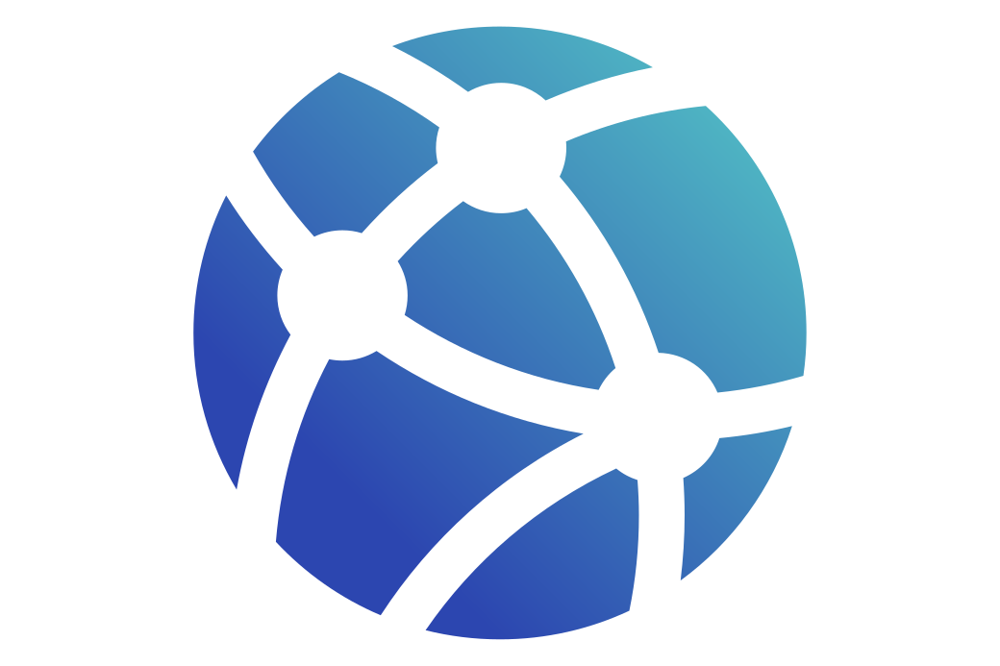

1. Computer
Either a Laptop or a Desktop computer, running a current version of Chrome or Firefox, with the latest version of Flash Player installed.

2. Internet
A stable connection is needed throughout the Talk. Preferably a LAN connection with at least 50Kb (kilobits per second) upload.

3. Audio Source
En external microphone connected to a mixer and an audio interface is highly recommended for optimal sound quality. For more information about the audio setup, refer to Step 1 (below).